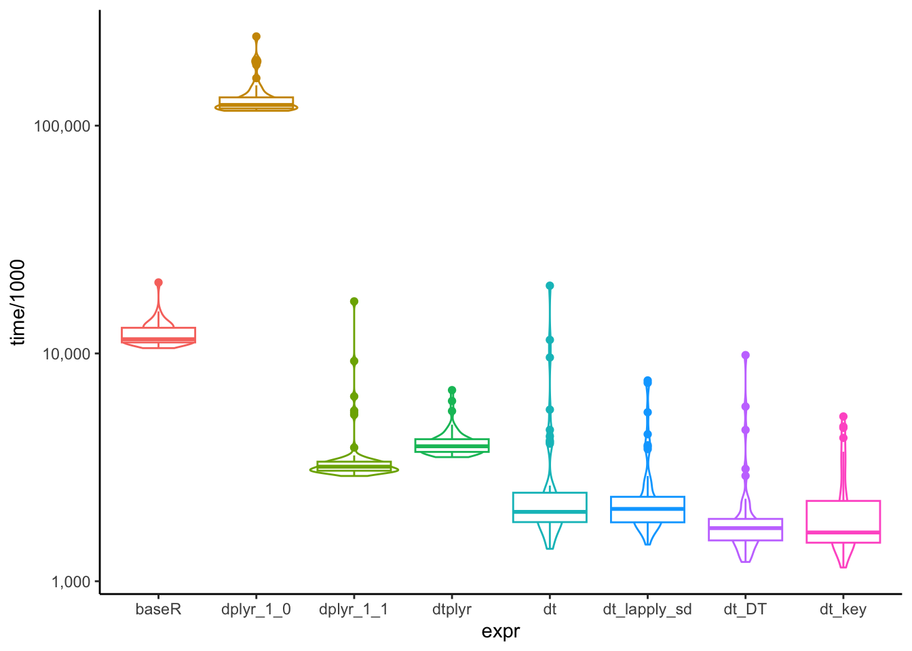
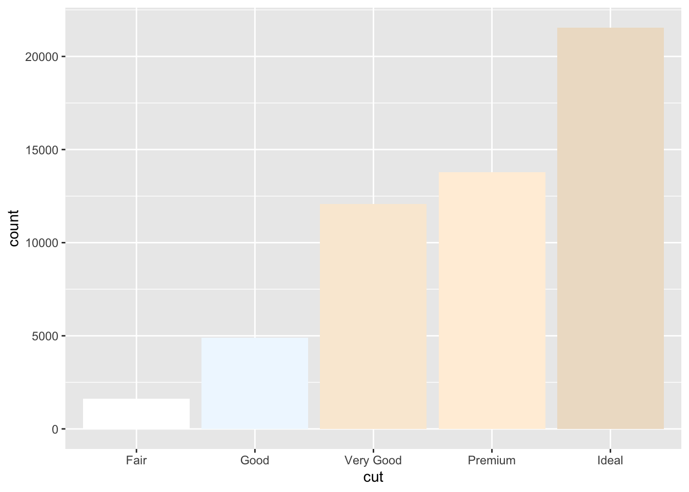

mlr3
6월 R meetup에서 발표한 내용을 공유합니다.
그래프를 통한 데이터 핸들링
머신러닝에서 최적의 피처 선택하기
R을 활용한 하위그룹 분석
R을 활용한 성향점수 매칭하는 방법
ggalluvial을 통한 Sankey plot 그리기
ggalluvial
ggplot2, ggcorrplot 를 통해 상관관계 히트맵 만들기
multiple imputation을 활용한 분석방법

주요 패키지들의 그룹별 계산 속도 비교
MIMIC-IV 데이터 DB에 저장하기
분석결과 보고를 위한 최고의 테이블 패키지
원하는대로 테이블 꾸며주는 패키지
mlr3를 이용한 하이퍼파라미터 튜닝 학습
처음 배우는 사람에게 추천하는 패키지
여러 모델 동시 학습 및 성능비교
정규표현식을 사용한 규칙 찾기
ggplot에서 facet을 사용할 때 label을 변경하는 방법에 대해 알아봅시다.
data.table 1.14.9 버전 업데이트 내용 살펴보기.
mlr3에 대한 소개 및 mlr3를 사용하기 위한 필수문법에 대해 소개합니다.
mice를 이용한 multiple imputation
그래프에 통계적 유의성(p-value) 출력
그래프와 축 간격을 조정하거나 tick 간격을 변경하는 방법
DataExplorer를 통한 탐색적 데이터 분석
tidyr을 이용해 데이터의 형태를 바꾸는 pivoting에 대해 알아봅시다.
across()로 column 동시 처리
across()
ggplot으로 그래프에 두 개의 y축을 활용하는 방법을 배우기
dplyr 필수함수 및 문법 익히기
dplyr
group_by()
dplyr를 활용한 그룹 별 계산

데이터 시각화를 진행할 때, 그래프에 적절한 색상을 선택하는 방법을 살펴봅시다.
특수 기호, 조인, 피봇 등 data.table에서 다루는 심화내용을 살펴봅시다.
ggplot으로 boxplot 그리는 방법
R 사용을 위한 필수 개념 및 함수을 배워봅시다.
Brief intorduction of Quarto
data.table 문법, 연산자, 함수
Interactive chart with ojs
두 가지 이상의 변수 통합
ggsurvplot을 통한 생존분석 시각화
ggsurvplot